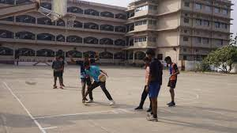

Basketball
it's conducted during the summer vacations
It is a very popular sport worldwide, played with a round and usually orange(orange-brown) ball that bounces. Basketball players mainly use skills such as dribbling, shooting, running, and jumping. Each made basket is worth two points, while a basket made from beyond the three-point line is worth three points.